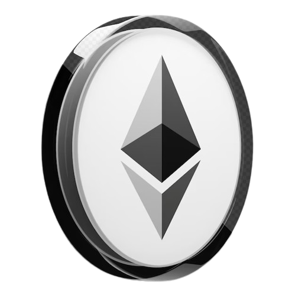

Ethereum é uma plataforma descentralizada de blockchain que permite a execução de contratos inteligentes e o desenvolvimento de aplicativos descentralizados (DApps). Foi proposto inicialmente em 2013 pelo programador Vitalik Buterin e lançado em 2015. Desde então, tornou-se uma das principais plataformas blockchain do mundo.
O Jogo dos Riscos e Oportunidades
O Ethereum tem sua própria criptomoeda nativa chamada Ether (ETH), que é usada para pagar taxas de transação e incentivar os mineradores a processarem transações na rede. Além disso, o Ethereum utiliza o modelo de consenso Proof of Stake (PoS) para validar e confirmar transações, o que ajuda a reduzir o consumo de energia em comparação com o modelo Proof of Work (PoW) utilizado pelo Bitcoin.

Illustration
A volatilidade do Ethereum é alta devido à demanda variável, eventos do mercado, competição e liquidez. Preços podem oscilar muito por causa de notícias, regulações e avanços tecnológicos, tornando o Ethereum arriscado, mas com potencial de lucro elevado.